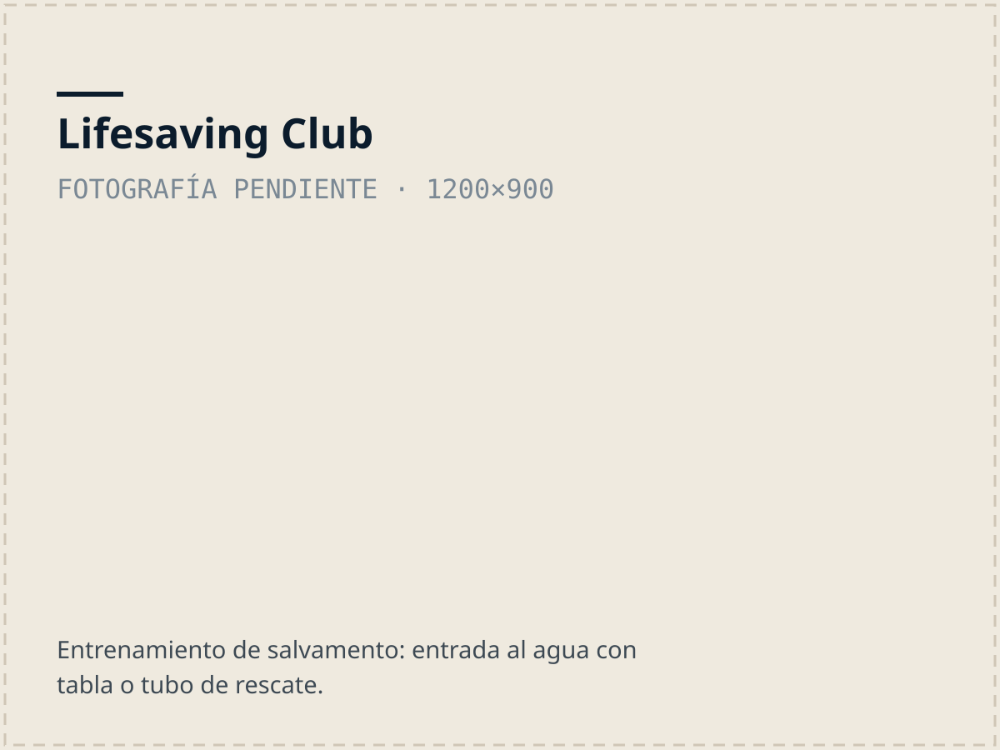
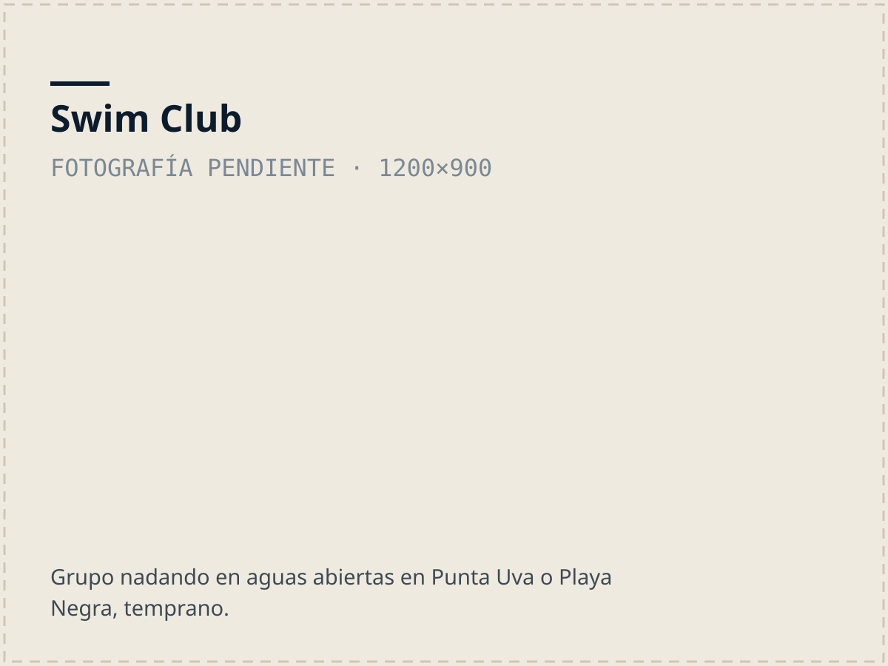

Abiertos a la comunidad
Clubes
Tres clubes, todos gratuitos y abiertos a quien viva en la zona. Uno patrulla, uno nada, uno bucea a pulmón. Se entra por el mismo formulario.

Lifesaving Club
Desde la creación de la organización nunca murió nadie en nuestras guardias. Patrullamos los domingos, el día con más incidencias de ahogamiento del país.
Educación Continua
La Educación Continua es la columna vertebral de la asociación, hasta el momento, impartimos los siguientes cursos a la comunidad:
- 5 cursos de Guardavidas
- 1 curso para Instructores de RCP & Primeros Auxilios
- 1 curso para instructores de natación
- 1 curso guardavidas Jr. Nipper
- 1 curso ELLIS de RCP
Guardias
Desde la creación de la organización, hasta hoy, nunca murió nadie en nuestras guardias.
Patrullamos Playa Grande y ahora Playa Chiquita, los domingos, los días con más incidencias de ahogamiento en todo el país.
También hacemos guardias extras para Semana Santa, algunos feriados y días festivos.
Entrenamiento de Salvamento
Todos los sábados a la mañana, en diferentes locaciones —dependiendo de las condiciones del mar— se realiza un entrenamiento en el cual se ven técnicas y habilidades de salvamento, abiertos a la comunidad.
Red de alerta de emergencias.
Tenemos un grupo de emergencias con más de 70 miembros de la comunidad —la mayoría: guardavidas, surfistas, nadadores, pescadores, buceadores, apneistas—.
En cuanto sucede una emergencia, activamos el protocolo y las personas que están cerca del incidente y pueden ayudar se acercan a colaborar en el rescate. Muchas vidas se han salvado.

Swim Club
El Club de Natación, es nuestra unidad de natación en aguas abiertas y piscina, que son gratuitas y abiertas a la comunidad.
La misión es acuatizar la comunidad, entendiendo que si creamos una comunidad que sea fuerte en el agua, vamos a reducir el índice de mortalidad por ahogamientos. Enseñando a nuestra comunidad a nadar y manejar técnicas básicas de salvamento vamos a tener menos ahogados y más “embajadores locales” que van a prevenir una emergencia.
Para que nuestra comunidad nade de forma segura en un marco de camaradería deportiva, en aguas abiertas, ofrecemos 3 entrenamientos semanales:
En Punta Uva: todos los jueves a las 7.15am
En Playa Negra: todos los martes y viernes 4pm.
Swim School, es parte de la misión de acuatizar la infancia, donde nuestros instructores certificados dan clase a niños de la comunidad, de forma gratuita en piscina.
- Punta Uva
- Jueves, 7:15 h
- Playa Negra
- Martes y viernes, 16:00 h
- Swim School
- Clases gratuitas en piscina para niñas y niños de la comunidad

Freediving Club
Es la unidad más nueva de la organización, e igualmente necesaria. El deporte ha experimentado un boom nacional y mundial que necesita de un marco regulatorio y de una enseñanza segura que en el Caribe aún no se da.
Somos una comunidad marina con amplia experiencia en “buceo a pulmón” o apnea. Nuestros pescadores históricamente han “langosteado” y “arbaleteado” nuestros fondos marinos y el Caribe es un destino internacional de buceo y snorkel.
El Freediving Club va a desarrollar el deporte por medio de cursos, talleres y competencias.